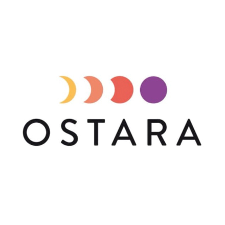
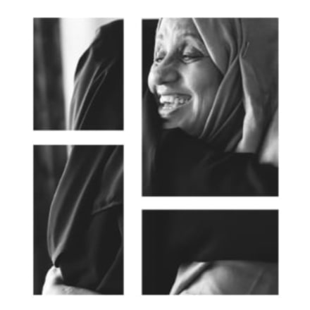
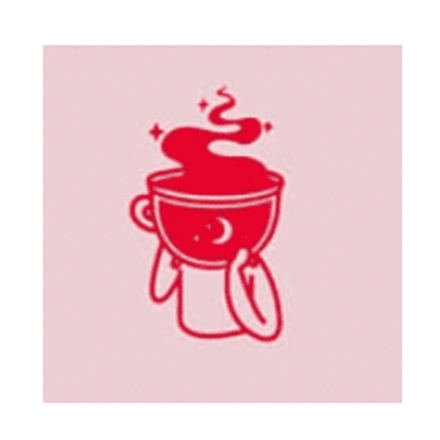
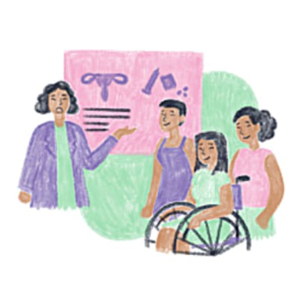
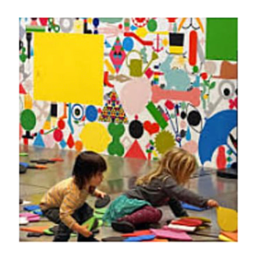

À ANNECY, QUARTIER DE NOVEL
Et si ce lieu était le nôtre ?
Devenons-en toutes et tous coopérateur·ices.
déjà
812
coopérateur·ices prochain palier : 1 700

La Maison Audacieuse : un lieu de vie pour prendre soin, créer du lien et bousculer les inégalités de genre.
Un lieu pour repenser la place des femmes
Aujourd'hui encore, les femmes restent plus exposées aux violences, à l'isolement et aux inégalités sociales et économiques. À Annecy comme ailleurs, les réponses existent, mais dispersées, fragmentées et rarement coordonnées.
Nous créons un lieu unique, capable d'y répondre de manière globale. Un lieu pour être accueillie, soignée, logée. Un lieu pour se rencontrer, créer du lien et faire société autrement.

Ostaraun espace d'accueil et d'accompagnement pour les femmes victimes de violences,
Le béguinageun habitat partagé pour des femmes âgées et isolées qui choisissent la vie en communauté,
Le Café des Audacieusesun café culturel et associatif ouvert sur le quartier, coworking safe en journée, rencontres en soirée,
Maison En-Santéun pôle santé inclusif, avec des soignant·es sensibilisé·es à la santé des femmes,
Banjoun espace de créativité et d'éveil pour les enfants et les familles.